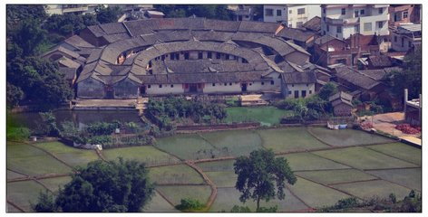

篮子打水
我的男友从来不要我打水，因为他怕，篮子打水-------一场空。
孤兰生攸园，万绿皆幽怨。
■设为首页
■收藏网址
■联系我们
个人信息 |
个人经历 |
个人技能 |
个人图库 |
家乡风景 |
|
||||||||
| 家在兴宁 | ||||||||
兴宁地处粤东北部，总面积2105平方公里，310平方公里的宁江盆地是广东十大盆地之一。兴宁建县于东晋咸和六年（公元331年），1994年撤县设市，现辖17个镇、3个街道，总人口119万，城市人口24万，素有“华侨之乡、文化之乡、足球之乡”之美誉。是全国粮食生产先进县、全国体育先进县、中国油茶之乡、全国重点产茶县、中国民间文化艺术（杯花舞）之乡、中国围龙屋之乡、中国花灯之乡、原中央苏区县、省文化先进县（市）、省教育强县（市）、省直管县财政改革示点县、省城镇建设试点县、省水利建设示范县，省双拥模范县、省农机化示范县、省林业生态县。 |
||||||||
| 中文名称 | 兴宁市 | 下辖地区 | 兴田街道、福兴街道、合水镇等 | |||||
| 面积 | 2104.85平方公里 | 机场 | 兴宁机场 军用 | |||||
| 外文名称 | XingningCity | 政府驻地 | 兴田街道 | |||||
| 人口 | 113万（2003年） | 火车站 | 兴宁火车站 | |||||
| 别名 | 齐昌 | 电话区号 | 0753 | |||||
| 方言 | 客家话（粤台片） | 车牌代码 | 粤M | |||||
| 行政区类别 | 县级市 | 邮政区码 | 514500 | |||||
| 所属地区 | 广东省（梅州市代管） | 地理位置 | 广东省东北部，扼东江、韩江上游 | |||||
| 著名景点 | 何子渊故居、兴宁岭东围屋 | |||||||
家乡美食 |
|||||
 |
|||||
 |
||
|  | ||
 |
|